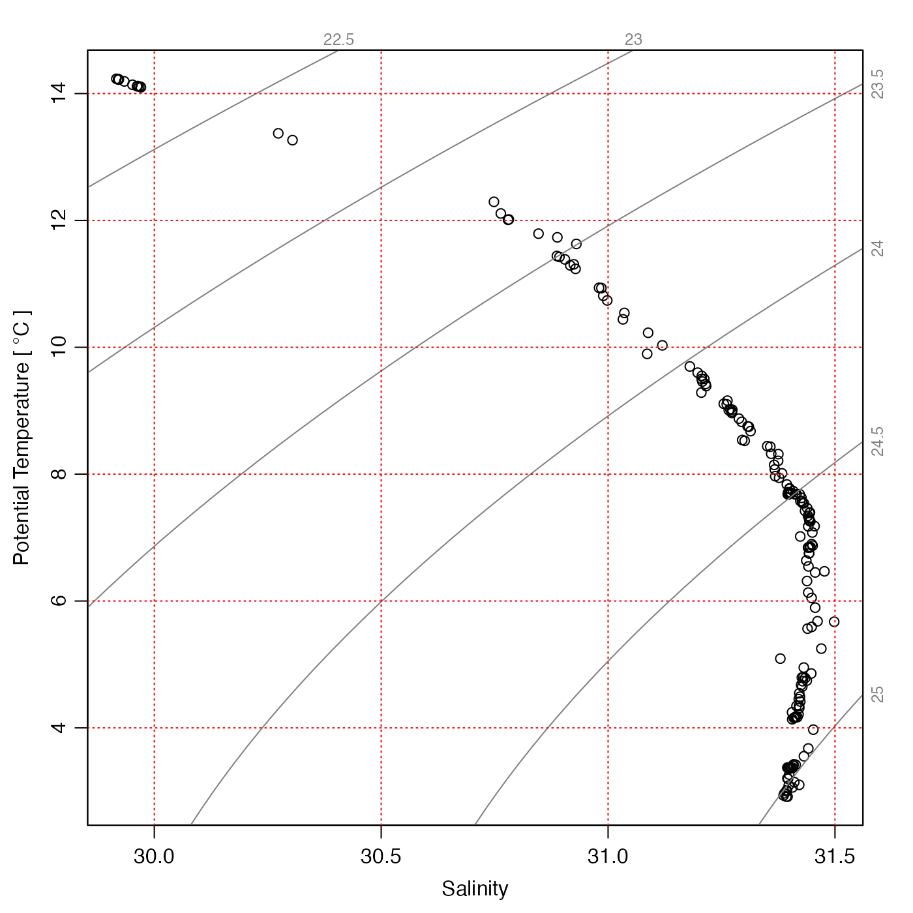
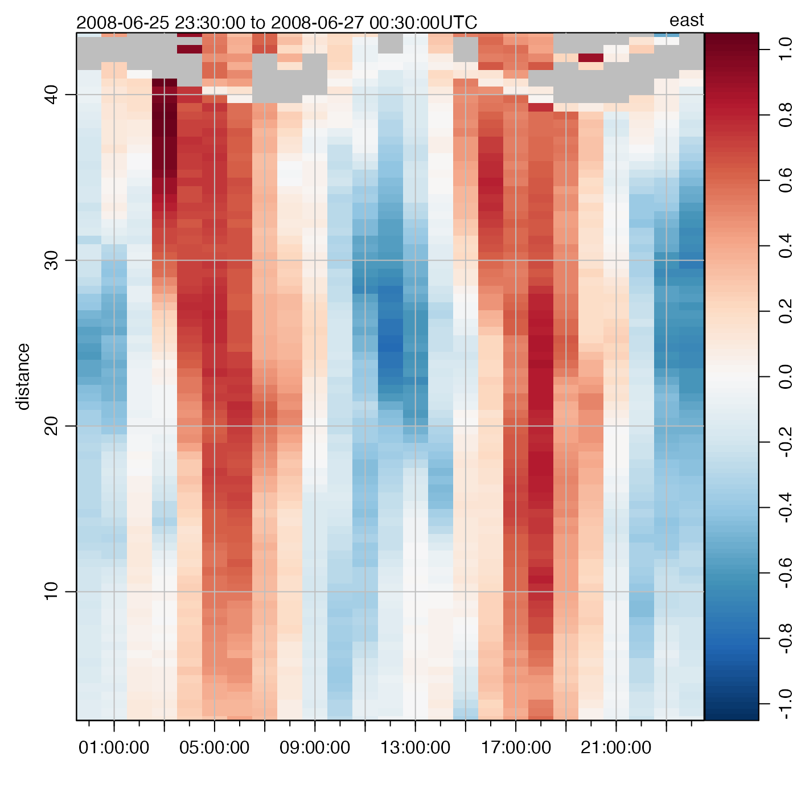

Add a Grid to an Existing Oce Plot
oce.grid(xat, yat, col = "lightgray", lty = "dotted", lwd = par("lwd"))
Arguments
| xat | either a list of x values at which to draw the grid, or the return value from an oce plotting function |
|---|---|
| yat | a list of y values at which to plot the grid (ignored if |
| col | color of grid lines (see |
| lty | type for grid lines (see |
| lwd | width for grid lines (see |
Details
For plots not created by oce functions, or for missing xat and yat,
this is the same as a call to grid() with missing nx and
ny. However, if xat is the return value from certain oce functions,
a more sophisticated grid is constructed. The problem with grid() is
that it cannot handle axes with non-uniform grids, e.g. those with time axes
that span months of differing lengths.
As of early February 2015, oce.grid handles xat produced as the
return value from the following functions: imagep() and
oce.plot.ts(), plot,adp-method(),
plot,echosounder-method(), and plotTS().
It makes no sense to try to use oce.grid for multipanel oce plots,
e.g. the default plot from plot,adp-method().
Examples
oce.grid(i, lwd=2)oce.grid(i, col='red')oce.grid(i, col='red')oce.grid(i, col='gray', lty=1)oce.grid(i, col='pink', lty=1)